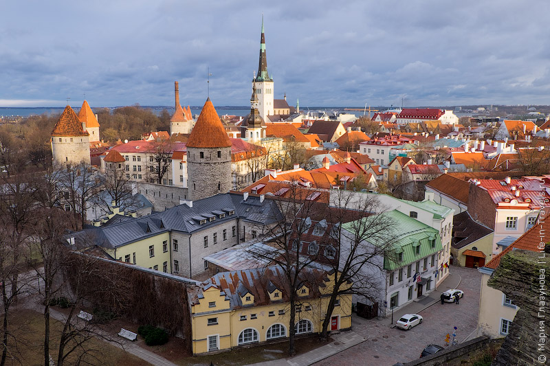

Путешествие в Эстонию: сказочный Таллин

Таллин – одна из самых маленьких европейских столиц, и несмотря на это, посмотреть все достопримечательности Таллина за 1 день просто невозможно, их здесь множество, как исторических, так и современных, как платных, так и бесплатных.
В одном Старом городе, кстати, отлично сохранившемся до наших дней, насчитывается пару десятков потрясающих мест, а сколько здесь средневековых церквей с колокольнями на которые можно забраться ради шикарных видов! А ещё крепостная стена по которой можно пройтись, и старинные башни-бастионы с подземельями, и множество интерактивных современных музеев, приятные парки и сады, городские смотровые площадки, изящные дворцы и соборы, высоченная телебашня, средневековые улочки и необычные кварталы.